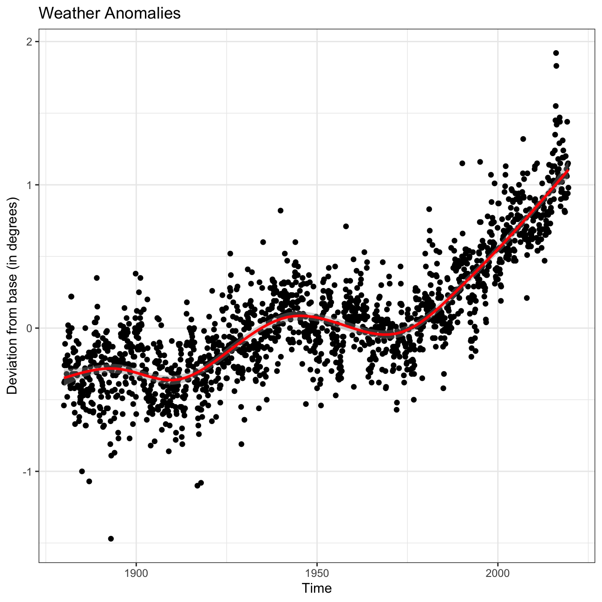
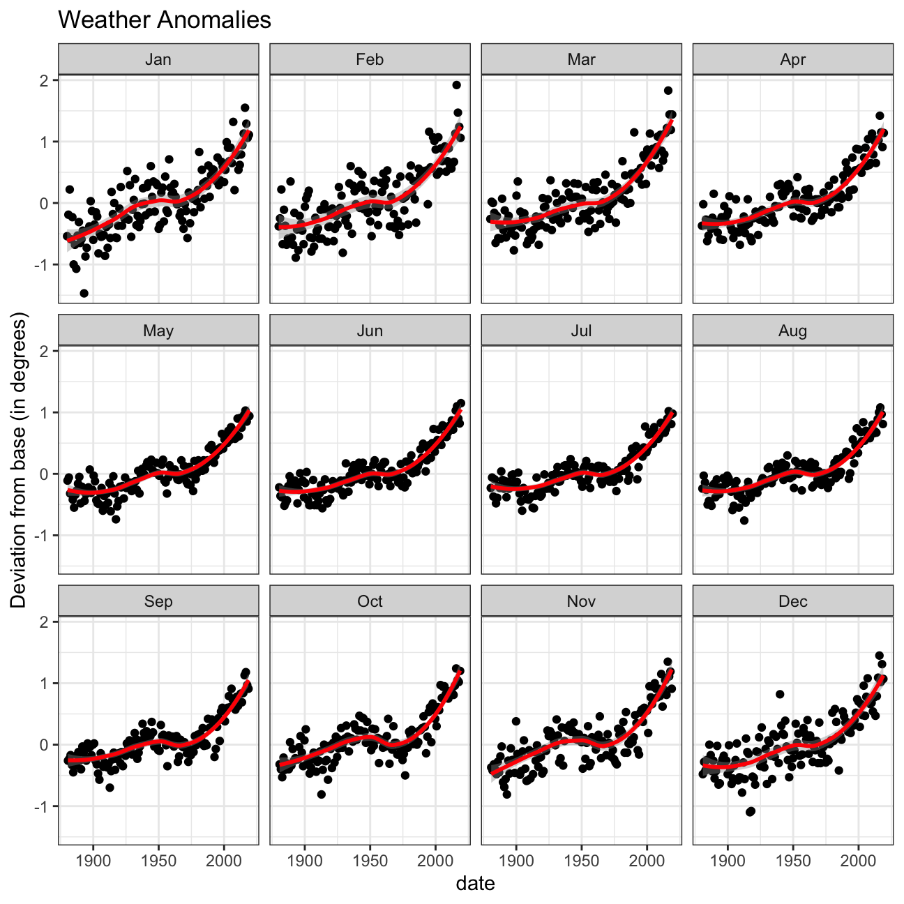
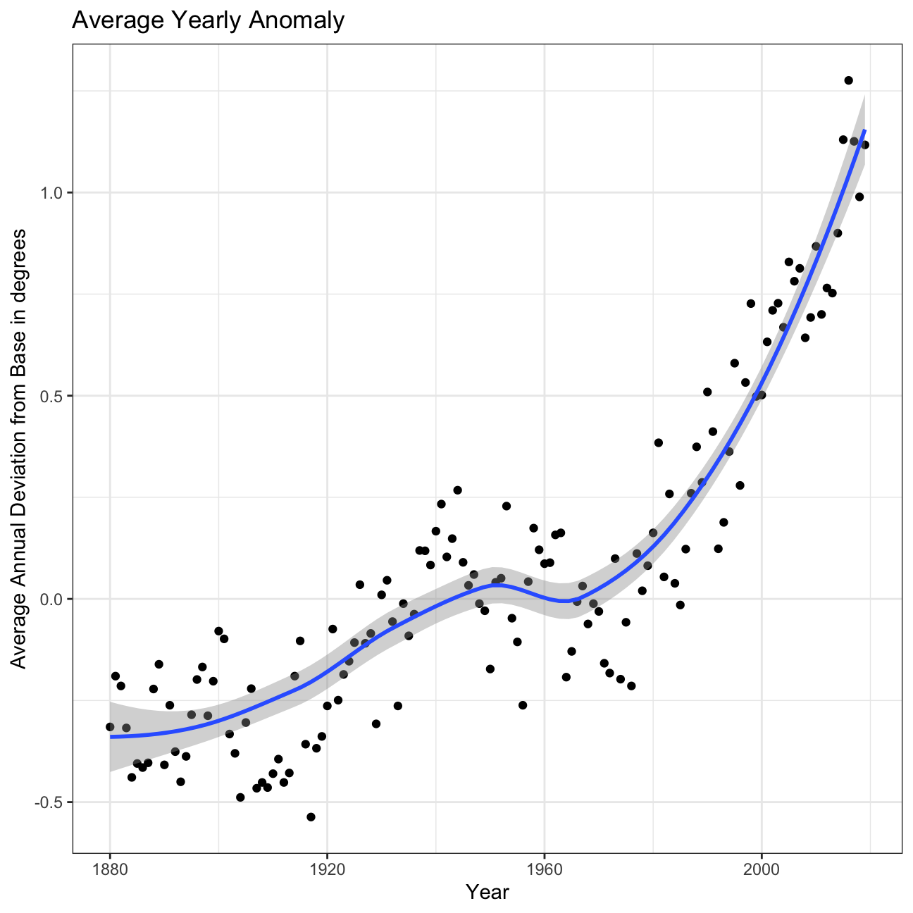
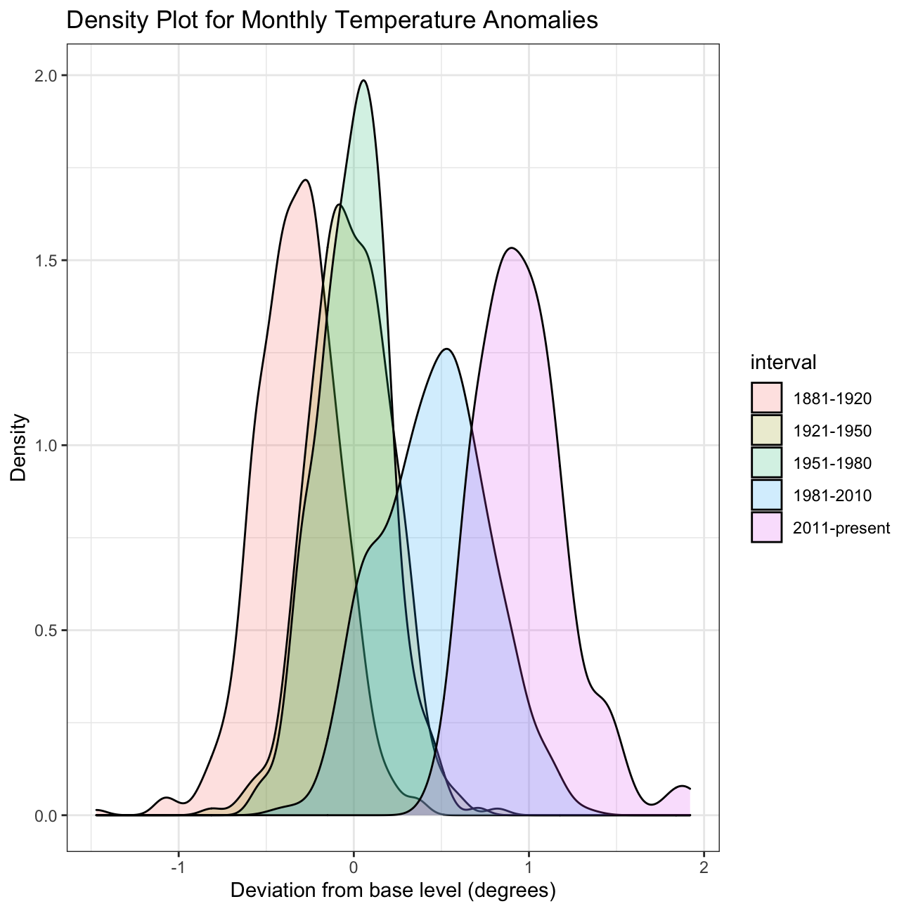

#Looking at data from NASA
The data used is obtained from the Combined Land-Surface Air and Sea-Surface Water Temperature Anomalies in the Northern Hemisphere at NASA’s Goddard Institute for Space Studies.
The tabular data of temperature anomalies can be found here
To define temperature anomalies there needs to be a reference, or base, period which NASA clearly states that it is the period between 1951-1980.
weather <-
read_csv("https://data.giss.nasa.gov/gistemp/tabledata_v3/NH.Ts+dSST.csv",
skip = 1,
na = "***")For each month and year, the dataframe shows the deviation of temperature from the normal (expected).
Here I select the relevant information for the data analysis and convert the data frame into tidy format. The new dataframe “tidyweather” is in long format with temperature deviations per month stored in the variable delta.
tidyweather <- weather %>%
select(Year, Jan, Feb, Mar, Apr, May, Jun, Jul, Aug, Sep, Oct, Nov, Dec)
tidyweather <- weather %>%
select(Year, Jan, Feb, Mar, Apr, May, Jun, Jul, Aug, Sep, Oct, Nov, Dec) %>%
gather("Jan", "Feb", "Mar","Apr","May","Jun","Jul","Aug","Sep","Oct","Nov","Dec", key = Month, value = delta)By plotting all weather anomalies over time, we can see a clear trend that the deviations in temperature from the base is increasing over time. Specifically, since 1975 there has been a stark increase where the deviation is on average greater than 0 and approaching and even exceeding 1 degree by 2019.
tidyweather <- tidyweather %>%
mutate(date = ymd(paste(as.character(Year), Month, "1")),
month = month(date, label=TRUE),
year = year(date))
ggplot(tidyweather, aes(x=date, y = delta))+
geom_point()+
geom_smooth(color="red") +
theme_bw() +
labs (
title = "Weather Anomalies", x = "Time", y = "Deviation from base (in degrees)"
)  Faceting these anomalies by months we can see that the general trends holds for all months. Note, during colder months (Oct - Mar), the increase seems more drastic since 1975.
 By averaging these deviations on a yearly basis, we also see a similar trend.
#creating yearly averages
average_annual_anomaly <- tidyweather %>%
group_by(Year) %>% #grouping data by Year
# creating summaries for mean delta
# use `na.rm=TRUE` to eliminate NA (not available) values
summarise(annual_average_delta = mean(delta, na.rm=TRUE))
#plotting the data:
ggplot(average_annual_anomaly, aes(x=Year, y= annual_average_delta))+
geom_point()+
#Fit the best fit line, using LOESS method
geom_smooth() +
#change to theme_bw() to have white background + black frame around plot
theme_bw() +
labs (
title = "Average Yearly Anomaly",
y = "Average Annual Deviation from Base in degrees"
) 
It could also be interesting to see how varying time periods compare to the base level in terms of distribution. For this, we need to add time period categories for all observations since 1881. I have created 5 categories below.
comparison <- tidyweather %>%
filter(Year>= 1881) %>% #remove years prior to 1881
#create new variable 'interval', and assign values based on criteria below:
mutate(interval = case_when(
Year %in% c(1881:1920) ~ "1881-1920",
Year %in% c(1921:1950) ~ "1921-1950",
Year %in% c(1951:1980) ~ "1951-1980",
Year %in% c(1981:2010) ~ "1981-2010",
TRUE ~ "2011-present"
))Now we can look at the distribution of deltas over the time periods. The base period (1951-1980) is highlighted green and has a mean close to 0 and with the smallest standard deviation, depicted by the width of the distribution. Over time, the mean and standard deviation has significantly increased, with 2011-present showing a mean 0.8 degrees.
ggplot(comparison, aes(x=delta, fill=interval))+
geom_density(alpha=0.2) + #density plot with tranparency set to 20%
theme_bw() + #theme
labs (
title = "Density Plot for Monthly Temperature Anomalies",
y = "Density", #changing y-axis label to sentence case
x = "Deviation from base level (degrees)"
)
Finally, here are summary statistics of the deviations since 2011. Most importantly, we can see that the mean_delta is increasing strongly over time. Furthermore, the 95% confidence intervals are increasing drastically.
formula_ci <- comparison %>%
filter(interval == "2011-present") %>%
group_by(year) %>%
summarise(mean_delta = mean(delta, na.rm = TRUE), sd_delta = sd(delta, na.rm = TRUE), count = n(), t_critical = qt(0.975, count-1), se = sd_delta/sqrt(count), margin_of_error = t_critical * se, ci_low = mean_delta - margin_of_error, ci_high = mean_delta + margin_of_error)
formattable(formula_ci)| year | mean_delta | sd_delta | count | t_critical | se | margin_of_error | ci_low | ci_high |
|---|---|---|---|---|---|---|---|---|
| 2011 | 0.700 | 0.103 | 12 | 2.2 | 0.0298 | 0.0655 | 0.634 | 0.766 |
| 2012 | 0.765 | 0.160 | 12 | 2.2 | 0.0462 | 0.1017 | 0.663 | 0.867 |
| 2013 | 0.753 | 0.111 | 12 | 2.2 | 0.0321 | 0.0706 | 0.682 | 0.823 |
| 2014 | 0.900 | 0.140 | 12 | 2.2 | 0.0405 | 0.0891 | 0.811 | 0.989 |
| 2015 | 1.130 | 0.163 | 12 | 2.2 | 0.0470 | 0.1035 | 1.027 | 1.233 |
| 2016 | 1.276 | 0.326 | 12 | 2.2 | 0.0940 | 0.2069 | 1.069 | 1.483 |
| 2017 | 1.126 | 0.213 | 12 | 2.2 | 0.0616 | 0.1355 | 0.990 | 1.261 |
| 2018 | 0.989 | 0.158 | 12 | 2.2 | 0.0455 | 0.1001 | 0.889 | 1.089 |
| 2019 | 1.117 | 0.163 | 12 | 2.2 | 0.0470 | 0.1035 | 1.014 | 1.221 |